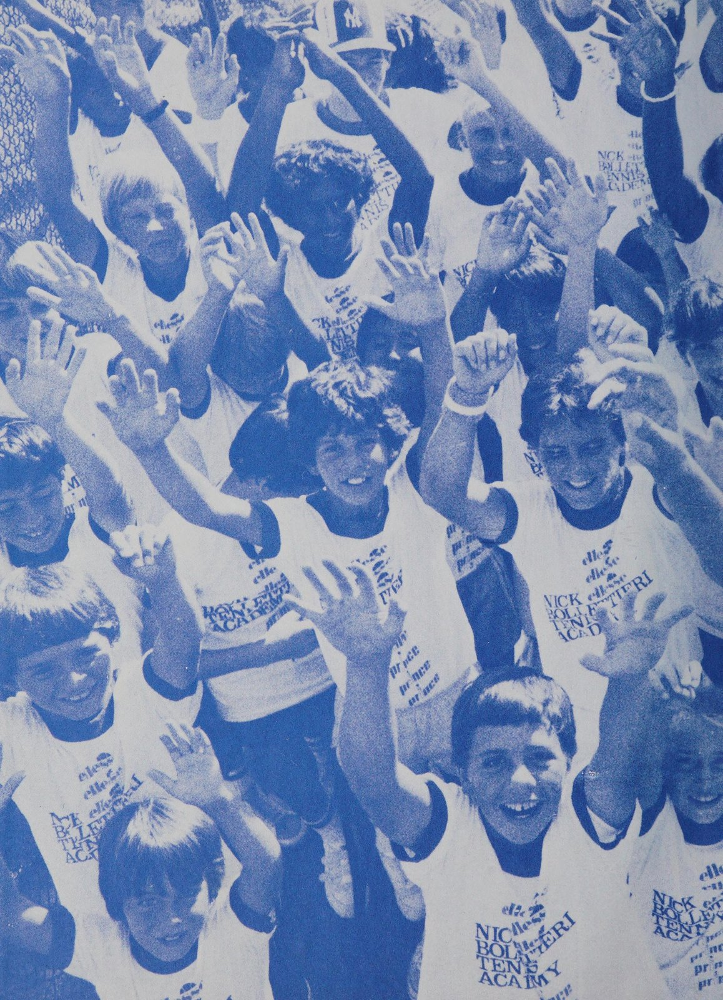
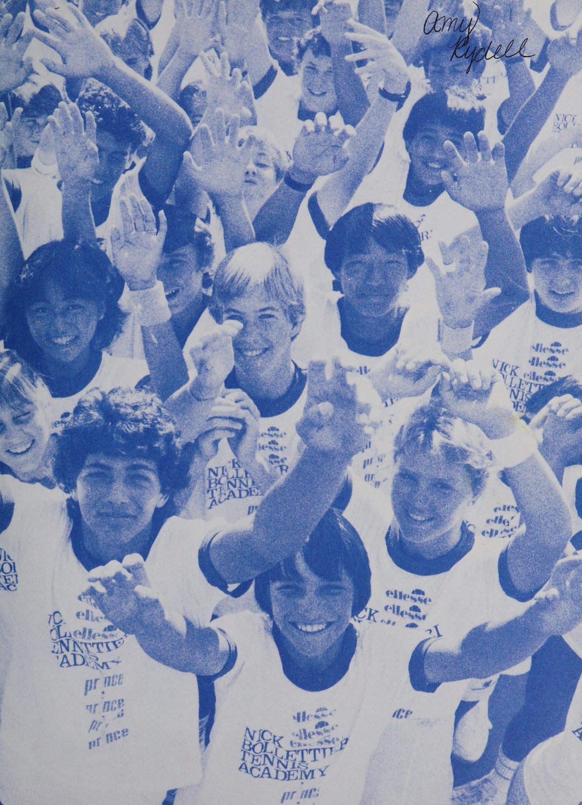
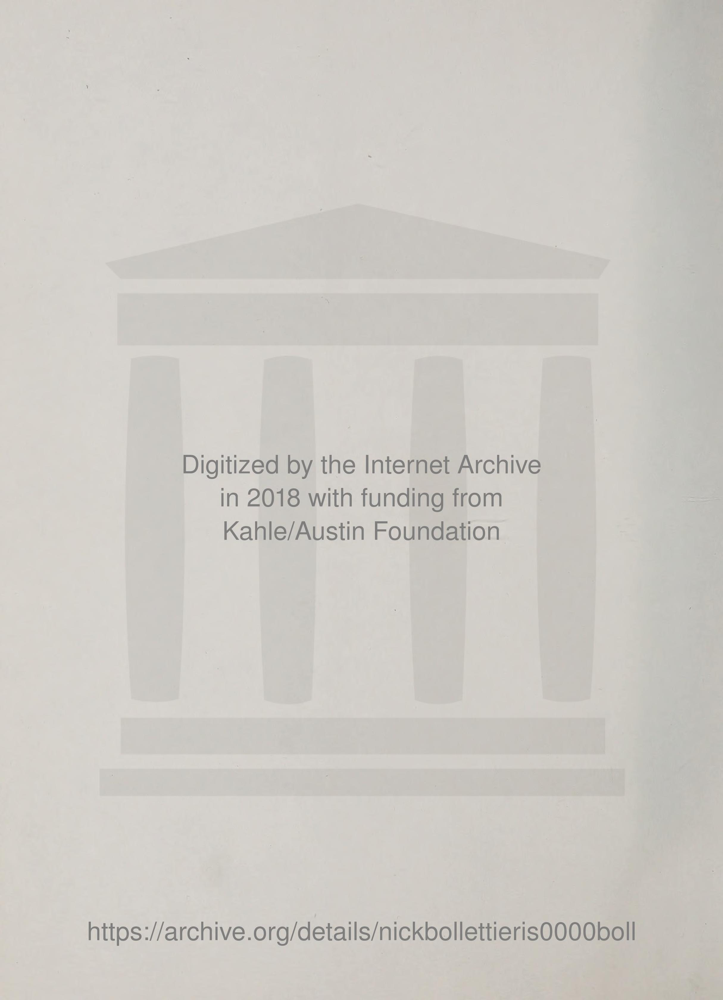
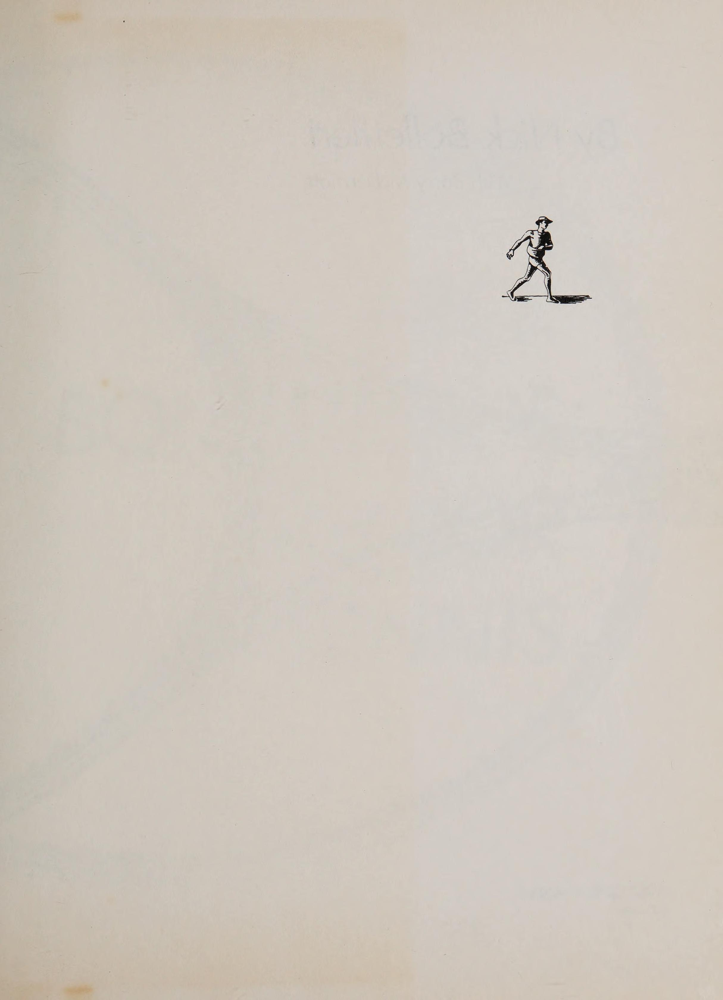
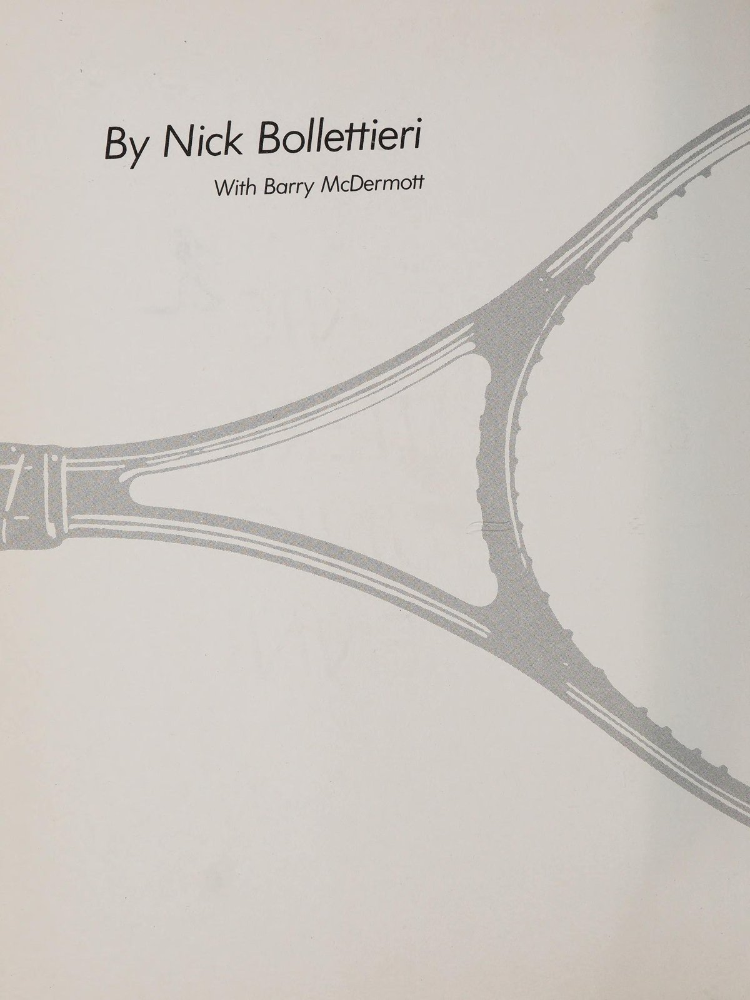
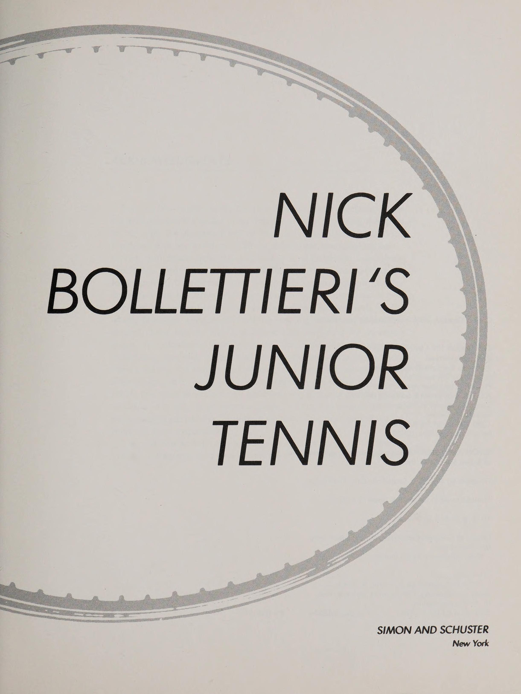
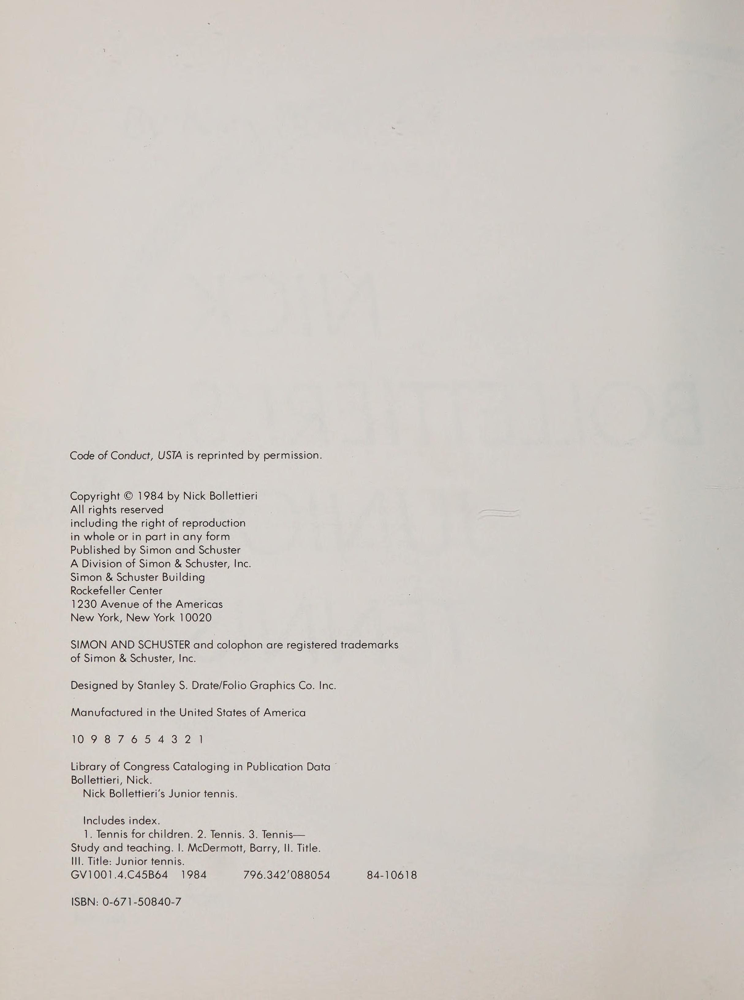
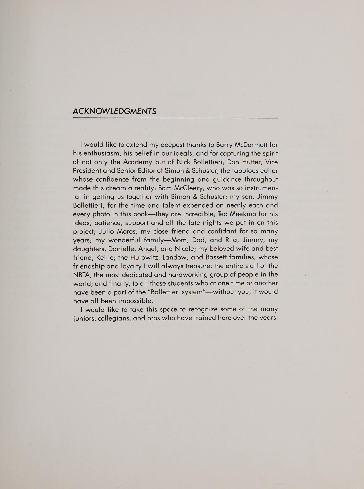

Phần 1: Con Đường Bollettieri, Triết Lý Học Viện & Mối Quan Hệ Cha Mẹ - Huấn Luyện Viên
Nick Bollettieri là một trong những huấn luyện viên có tầm ảnh hưởng sâu sắc nhất lịch sử quần vợt hiện đại. Tại Học viện Quần vợt Nick Bollettieri (NBTA) ở Bradenton, Florida, ông đã tiên phong xây dựng mô hình nội trú kết hợp giữa rèn luyện thể thao cường độ cực cao và học văn hóa. Hệ thống đào tạo của ông đã nhào nặn nên hàng loạt huyền thoại số một thế giới như Andre Agassi, Jim Courier, Monica Seles, Mary Pierce, Maria Sharapova và chị em nhà Williams.
Trong cuốn sách kinh điển dành cho các tài năng trẻ, Bollettieri mở đầu bằng việc xác lập triết lý phát triển cốt lõi: Quần vợt đỉnh cao là một trò chơi của những nhà vô địch, đòi hỏi tính kỷ luật sắt đá, mục tiêu rõ ràng và một sự phân định rạch ròi giữa vai trò của cha mẹ và huấn luyện viên.
1. Triết Lý Đào Tạo Tại Học Viện Bollettieri (The Bollettieri Way)
Tại NBTA, phương châm sống còn là biến tiềm năng thành hiện thực thông qua sự khổ luyện không khoan nhượng. Bollettieri tin rằng tài năng thiên bẩm chỉ chiếm 10%, 90% còn lại đến từ ý chí sắt đá, đạo đức tập luyện và sự cống hiến quên mình:
- Văn Hóa Kỷ Luật Sắt: Giờ giấc nghiêm ngặt, trang phục chỉnh tề, thái độ tập trung 100% ngay từ cú khởi động đầu tiên. Bất kỳ sự lơ là hay thái độ tiêu cực nào trên sân tập đều bị chấn chỉnh ngay lập tức.
- Tập Luyện Dưới Áp Lực Thi Đấu (Competitive Environment): Mọi buổi tập đều được thiết kế như một trận chung kết thu nhỏ. Các tay vợt trẻ được cọ xát liên tục với những đối thủ mạnh hơn để học cách sinh tồn và vượt qua giới hạn chịu đựng của bản thân.
- Tinh Thần Dám Nghĩ Lớn: Bollettieri truyền cho học trò niềm tin tuyệt đối rằng họ có thể trở thành số một thế giới nếu họ sẵn sàng trả giá bằng mồ hôi và sự kiên trì mỗi ngày.

2. Cha Mẹ Làm Cha Mẹ, Huấn Luyện Viên Làm Huấn Luyện Viên (Parent-Coach Dynamics)
Một trong những chương quan trọng và thẳng thắn nhất của cuốn sách là lời cảnh tỉnh của Bollettieri dành cho các bậc phụ huynh:
Bollettieri chỉ ra những sai lầm chết người của phụ huynh có con em thi đấu:
- Đo Lường Tình Yêu Bằng Tỷ Số Trận Đấu: Trẻ em cần cảm nhận được rằng tình thương của cha mẹ không thay đổi dù chúng thắng hay thua. Việc chỉ trích gay gắt trên đường về nhà sau một trận thua sẽ giết chết niềm đam mê quần vợt của trẻ.
- Can Thiệp Vào Quyết Định Chuyên Môn: Nghi ngờ giáo án hoặc chỉ trích chiến thuật của huấn luyện viên trước mặt con trẻ sẽ làm xói mòn lòng tin và sự tôn trọng của vận động viên đối với người thầy.
- Kỳ Vọng Quá Sớm Về Tiền Bạc Và Danh Vọng: Quá trình phát triển của một vận động viên trẻ là một cuộc chạy marathon kéo dài từ 10 đến 15 năm, không phải là một canh bạc ngắn hạn.

3. Thiết Lập Mục Tiêu & Ngọn Lửa Khát Vọng (Goals and Motivation)
Để duy trì động lực tập luyện qua hàng nghìn giờ khổ luyện, vận động viên trẻ cần có một hệ thống mục tiêu ba tầng:
- Mục Tiêu Quá Trình (Process Goals): Tập trung vào những yếu tố mà vận động viên có thể kiểm soát hoàn toàn mỗi ngày, ví dụ: Di chuyển chân tích cực hơn, xoay vai sớm hơn, hoặc duy trì thái độ tích cực sau mỗi lỗi đánh bóng.
- Mục Tiêu Hiệu Suất (Performance Goals): Đo lường các chỉ số cụ thể qua từng tháng, ví dụ: Nâng tỷ lệ giao bóng một vào sân lên 65%, hoặc thực hiện 20 cú đánh sâu liên tiếp không hỏng.
- Mục Tiêu Kết Quả (Outcome Goals): Những ước mơ lớn như vô địch giải quốc gia, lọt vào top 100 thế giới, hoặc giành học bổng thể thao đại học. Mục tiêu này thắp sáng ngọn lửa khát vọng, nhưng không được phép trở thành gánh nặng tâm lý đè bẹp từng ngày tập luyện.
Phần 2: Nền Tảng Kỹ Thuật, Thể Lực Chuyên Biệt & Chuỗi Bài Tập Cường Độ Cao
Nick Bollettieri là người đã định nghĩa lại cách thức đào tạo kỹ thuật quần vợt hiện đại bằng việc chuyển đổi trọng tâm từ lối chơi phòng thủ truyền thống sang trường phái tấn công vũ bão từ vạch cuối sân (aggressive baseliner). Để thi triển lối chơi này, các tài năng trẻ phải xây dựng một nền tảng thể lực vượt trội cùng hệ thống kỹ thuật tạo lực bộc phát tối đa.
Phần này phân tích các tiêu chuẩn kỹ thuật cốt lõi do Bollettieri đúc kết và giới thiệu chuỗi bài tập cường độ cao đặc trưng của học viện NBTA.
1. Thể Lực Là Cội Nguồn Của Sự Tự Tin (Physical Conditioning)
Tại học viện của Bollettieri, khẩu hiệu bất hủ luôn vang lên trên sân tập: "Nếu bạn có thể lực tốt hơn đối thủ, bạn đã thắng một nửa trận đấu trước khi vung vợt."
- Sức Mạnh Bộc Phát (Explosive Power): Trẻ em không cần nâng tạ nặng mà tập trung vào các bài tập với trọng lượng cơ thể: Bật nhảy cóc (squat jumps), hít đất bộc phát, ném bóng tạ (medicine ball throws) để kích hoạt chuỗi động học từ hông đến vai.
- Khả Năng Phục Hồi Nhanh (Aerobic Base & Recovery): Rèn luyện hệ hô hấp tim mạch để nhịp tim có thể hạ nhanh từ mức tối đa về trạng thái ổn định trong vòng 20 giây giải lao giữa các pha bóng.
- Sự Linh Hoạt Của Khớp Và Thăng Bằng: Căng cơ chủ động mỗi sáng và tối giúp mở rộng tầm với, hạn chế tối đa nguy cơ chấn thương ở lứa tuổi đang phát triển chiều cao nhanh chóng.

2. Kỹ Thuật Tấn Công Nền Tảng Theo Chuẩn Bollettieri

Bollettieri luôn đề cao tính thực dụng và uy lực trong từng cú đánh:
- Cú Thuận Tay Tấn Công Hiện Đại (Aggressive Forehand): Sử dụng kiểu cầm Semi-Western, hạ đầu vợt xuống thấp dưới tầm bóng để tạo độ xoáy cuộn cực mạnh, sau đó vung vợt tăng tốc dữ dội qua điểm tiếp xúc phía trước cơ thể. Động tác kết thúc quét qua vai (windshield wiper) cho phép quả bóng cắm sâu xuống sân với tốc độ kinh hoàng.
- Cú Trái Hai Tay Uy Lực (Dominant Two-Handed Backhand): Tay không thuận (tay trái đối với người thuận tay phải) đóng vai trò như một cú thuận tay thứ hai, cung cấp 70% lực đẩy và điều hướng bóng. Thân người xoay chắc chắn, tạo thành một khối vững như thép khi đối đầu bóng nặng.
- Giao Bóng Đẩy Chân Bộc Phát (Leg Drive Serve): Tận dụng sức bật từ hai đầu gối nhún sâu. Khi tung bóng lên, toàn bộ cơ thể uốn cong như cánh cung và bật vọt lên không trung để đón bóng ở điểm cao nhất, dồn toàn bộ trọng lượng vào cú giao bóng một.
- Tuyệt Kỹ Drive Volley Của Học Viện NBTA: Thay vì bắt một quả volley đệm nhẹ khi bóng ngắn lơ lửng giữa sân, Bollettieri dạy học trò thực hiện cú vung vợt trọn vẹn trên không (drive volley) để kết liễu điểm số ngay lập tức. Đây chính là vũ khí độc quyền làm nên tên tuổi của Monica Seles và Andre Agassi.
3. Chuỗi Bài Tập Cường Độ Cao Của Học Viện (NBTA Drilling System)
Các bài tập tại NBTA nổi tiếng với áp lực nghẹt thở, buộc vận động viên trẻ phải vận hành ở 100% công suất:
- Bài Tập 2 Đánh 1 Bào Mòn Thể Lực (Two-on-One Pressure Drill): Vận động viên trẻ đứng đơn độc một bên sân, đối đầu với hai huấn luyện viên hoặc bạn tập ở bên kia sân. Hai người luân phiên bắn bóng sang hai góc sân xa nhất với tốc độ cực nhanh trong suốt 3 phút liên tục. Vận động viên phải chạy không ngừng và duy trì độ sâu cho mỗi đường bóng trả về.
- Bài Tập Công Phá Góc Sân (Inside-Out Forehand Drill): Huấn luyện viên nạp bóng liên tục vào góc trái tay. Người chơi phải chủ động lướt chân né trái đánh thuận tay (inside-out) cắm bóng về góc xa đối diện, sau đó lập tức phục hồi vị trí trung tâm để đón quả bóng tiếp theo.
Phần 3: Lộ Trình Vàng Từng Độ Tuổi: Từ Khởi Đầu Đến Ngưỡng Cửa Chuyên Nghiệp
Một trong những đóng góp quý giá nhất của Nick Bollettieri cho nền huấn luyện thế giới là việc phân chia lộ trình đào tạo theo từng độ tuổi phát triển sinh học và tâm lý của trẻ em. Rất nhiều tài năng sáng giá đã bị tàn lụi vì bị ép thi đấu quá tải ở lứa tuổi lên 8 hoặc lên 10, trong khi các kỹ năng chiến thuật then chốt lại bị bỏ quên ở giai đoạn 14 đến 16 tuổi.
Phần này vạch rõ lộ trình từng bước từ 8 đến 18 tuổi để xây dựng một vận động viên hoàn thiện cả về thể chất lẫn tâm lý thi đấu.
1. Giai Đoạn Khởi Đầu: 8 Đến 10 Tuổi (Starting Off)
Mục tiêu số một ở lứa tuổi này là nuôi dưỡng tình yêu nguyên sơ với quả bóng và niềm vui khi bước ra sân:
- Không Nhồi Nhét Kỹ Thuật Máy Móc: Ở tuổi này, trẻ em học hỏi tốt nhất thông qua bắt chước và trò chơi vận động. Huấn luyện viên cần khuyến khích sự tự nhiên, tập trung vào khả năng phối hợp giữa mắt, tay và chân.
- Sử Dụng Dụng Cụ Phù Hợp: Cây vợt phải có chiều dài và trọng lượng vừa vặn với thể hình của trẻ. Một cây vợt quá nặng sẽ làm hỏng cấu trúc cổ tay và khớp vai của đứa trẻ vĩnh viễn.
- Khuyến Khích Chơi Đa Môn Thể Thao: Bollettieri kịch liệt phản đối việc chuyên môn hóa sớm chỉ chơi quần vợt ở tuổi lên 8. Trẻ cần chơi thêm bóng đá, bóng rổ hoặc bơi lội để phát triển toàn diện hệ vận động.

2. Giai Đoạn Lĩnh Hội: 10 Đến 12 Tuổi (The Learning Phase)
Đây là "thời điểm vàng" để hoàn thiện khuôn mẫu kỹ thuật chuẩn xác và thói quen kỷ luật:
- Định Hình Khuôn Động Tác Căn Bản: Củng cố điểm tiếp xúc bóng ổn định, bộ chân di chuyển nhịp nhàng và kỹ thuật giao bóng chuẩn Continental. Bất kỳ thói quen xấu nào hình thành trong giai đoạn này sẽ rất khó sửa chữa về sau.
- Chăm Chút Những Chi Tiết Nhỏ (The Little Things): Học cách chuẩn bị túi vợt tự lập, quấn cán vợt, ăn uống đúng giờ và thực hiện bài tập kéo giãn cơ sau buổi tập mà không cần cha mẹ nhắc nhở.
- Tiếp Cận Thi Đấu Nhẹ Nhàng: Bắt đầu tham gia các giải đấu phong trào tại địa phương với mục tiêu thử nghiệm chiến thuật chứ không đặt nặng thành tích thắng thua.
3. Bốn Năm Bản Lề Then Chốt: 12 Đến 16 Tuổi (Four Big Years)
Giai đoạn bản lề quyết định một đứa trẻ có thể vươn lên thành một đấu thủ hàng đầu hay chỉ dừng lại ở mức người chơi nghiệp dư:
- Thích Ứng Với Sự Phát Triển Chiều Cao Bột Phát: Cơ thể trẻ phát triển nhanh chóng khiến sự phối hợp vận động tạm thời bị xáo trộn. Huấn luyện viên cần kiên nhẫn điều chỉnh lại bộ chân và củng cố cơ bắp lõi (core stability).
- Rèn Luyện Sự Tập Trung Cao Độ (Concentration Under Fire): Dạy học trò cách cô lập tâm trí, thở sâu giữa các điểm số và áp dụng các nghi thức tâm lý (rituals) trước mỗi quả giao bóng để giữ bình tĩnh dưới áp lực nghẹt thở.
- Tăng Cường Mức Độ Cọ Xát Giải Quốc Gia: Bắt đầu thi đấu các giải đấu cấp khu vực và quốc gia để làm quen với các phong cách thi đấu đa dạng và khắc nghiệt.

4. Thử Thách Lớn & Quyết Định Cuộc Đời: 16 Đến 18 Tuổi (The Decision)
Ở độ tuổi trưởng thành này, vận động viên và gia đình phải đối diện với ngã rẽ quan trọng nhất:
- Con Đường Thi Đấu Chuyên Nghiệp (Going Pro): Đòi hỏi tài năng xuất chúng, nền tảng thể lực phi thường, nguồn tài trợ vững chắc và sự chuẩn bị tâm lý để đón nhận cuộc sống lưu đấu khắc nghiệt quanh năm suốt tháng.
- Con Đường Học Bổng Đại Học (College Tennis): Một lựa chọn tuyệt vời và an toàn cho phần lớn các tay vợt trẻ hàng đầu. Thi đấu tại hệ thống NCAA tại Mỹ giúp vận động viên tiếp tục trui rèn bản lĩnh thể thao trong khi vẫn hoàn thành tấm bằng đại học danh giá.
Phần 4: Bản Lĩnh Thi Đấu Giải, Chiến Thuật & Dinh Dưỡng Thể Thao Đỉnh Cao
Kỹ năng đánh bóng trên sân tập chỉ là một phần nhỏ trong bức tranh toàn cảnh của một nhà vô địch. Khi bước vào đấu trường giải đấu thực sự, một vận động viên trẻ phải học cách đối diện với áp lực khán giả, đối thủ khó chịu, điều kiện thời tiết khắc nghiệt và sự kiệt quệ thể lực. Nick Bollettieri đúc kết toàn bộ cẩm nang tác chiến thực địa nhằm giúp các tay vợt trẻ tự tin bước ra sân khấu lớn.
Phần kết này cung cấp quy trình chuẩn bị giải đấu chuyên nghiệp, chiến lược tác chiến trên sân, văn hóa ứng xử theo luật và chế độ dinh dưỡng tối ưu cho vận động viên trẻ.
1. Quy Trình Chuẩn Bị Giải Đấu Chuyên Nghiệp (Tournament Procedures)
Sự chuẩn bị kỹ lưỡng quyết định tâm thế thi đấu tự tin của một đấu thủ:
- Có Mặt Sớm Và Làm Quen Sân Bãi: Đến địa điểm thi đấu tối thiểu 60 đến 90 phút trước giờ bóng lăn. Làm quen với tốc độ bóng nảy của mặt sân, hướng gió thổi và hướng nắng chiếu để lên phương án chọn sân phù hợp khi tung đồng xu bốc thăm.
- Quy Trình Khởi Động Thể Chất Chặt Chẽ: Dành 20 phút chạy nhẹ, nâng cao đùi, kéo giãn động và kích hoạt khớp vai với dây thun trước khi bước vào sân cầm vợt. Không bao giờ để cơ bắp bị nguội lạnh khi bước vào trận đấu chính thức.
- Kiểm Tra Trang Thiết Bị Trong Túi Vợt: Tối thiểu 3 cây vợt được đan cước cùng độ căng, quần áo dự phòng, khăn lau mồ hôi, băng quấn cổ tay và các thanh năng lượng bổ sung.

2. Chiến Lược Thi Đấu & Kế Hoạch Tác Chiến (Match Strategy)
Bollettieri khẳng định rằng một kế hoạch thi đấu rõ ràng sẽ xua tan nỗi sợ hãi:
1. Luôn áp đặt điểm mạnh nhất của mình vào điểm yếu nhất của đối thủ ngay từ pha bóng đầu tiên.
2. Khi dẫn trước điểm số, hãy giữ vững lối chơi tấn công có kiểm soát, đừng bao giờ chùng xuống chơi phòng thủ thụ động.
3. Khi bị dẫn điểm sâu, hãy thay đổi nhịp độ (đánh bóng bổng hơn, cắt bóng thấp hơn hoặc lên lưới bất ngờ) để phá vỡ sự hưng phấn của đối thủ.
- Khai Thác Điểm Yếu Giao Bóng Hai: Tiến thẳng vào sân khi đối thủ chuẩn bị giao bóng hai, gây áp lực trực giác buộc họ phải giao bóng trong thế e dè hoặc tự phạm lỗi giao bóng kép.
- Bảo Vệ Điểm Giao Bóng Của Mình Bằng Mọi Giá: Tập trung tối đa vào tỷ lệ bóng một vào sân (đạt trên 65%), tạo lợi thế chủ động từ cú đánh tiếp theo (Serve + 1 Forehand).
3. Tôn Trọng Luật Chơi & Văn Hóa Thể Thao (Know the Rules & Sportsmanship)
Một nhà vô địch vĩ đại phải luôn là một biểu tượng về tinh thần thể thao cao thượng:
- Trung Thực Tuyệt Đối Khi Bắt Bóng (Line Calling Integrity): Trong các giải trẻ tự bắt bóng, nguyên tắc bất di bất dịch là: Nếu bạn không chắc chắn 100% quả bóng ra ngoài, bạn phải xem quả bóng đó là hợp lệ và tiếp tục thi đấu. Sự gian lận điểm số sẽ hủy hoại nhân cách và danh dự của một vận động viên.
- Xử Lý Bình Tĩnh Khi Đối Thủ Gian Lận: Không được nổi nóng cãi vã trên sân. Hãy lịch sự dừng pha bóng và yêu cầu ban tổ chức cử trọng tài giám sát (court monitor) ra phân xử.
- Bắt Tay Chân Thành Sau Trận Đấu: Dù thắng trong hân hoan hay thua trong đau đớn, hãy luôn tiến lại gần lưới, nhìn thẳng vào mắt đối thủ và bắt tay thật chặt với thái độ tôn trọng.

4. Dinh Dưỡng Thể Thao Cho Tay Vợt Trẻ (High-Performance Nutrition)
Thức ăn là nguồn nhiên liệu vận hành cỗ máy cơ thể của vận động viên trẻ:
- Bữa Ăn Trước Trận Đấu (2 Đến 3 Giờ Trước Khi Thi Đấu): Cung cấp carbohydrate phức hợp dễ tiêu hóa như yến mạch, cơm gạo lứt, mì ống nạc, ức gà và chuối chín. Tránh các món chiên xào nhiều dầu mỡ gây đầy bụng khó tiêu.
- Bù Nước Và Điện Giải Trong Trận Đấu: Uống từng ngụm nhỏ nước lọc xen kẽ nước uống thể thao chứa điện giải (natri, kali) tại mỗi lần đổi sân (sau mỗi 2 game). Đừng đợi đến khi cảm thấy khát mới uống.
- Cửa Sổ Phục Hồi Vàng (30 Phút Sau Trận Đấu): Nạp ngay một bữa phụ chứa tỷ lệ 3 carbohydrate : 1 protein (ví dụ: Sữa sô-cô-la, sinh tố chuối và sữa chua) để tái tạo lượng glycogen dự trữ trong cơ bắp và phục hồi sợi cơ bị tổn thương.